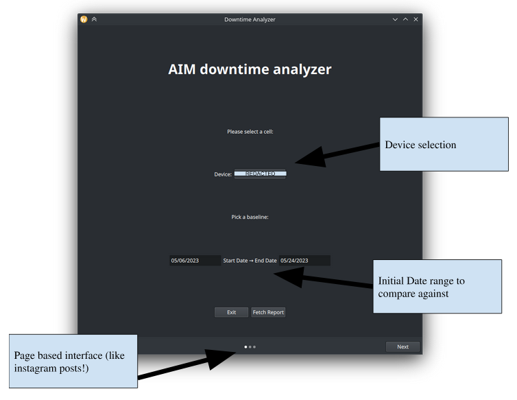
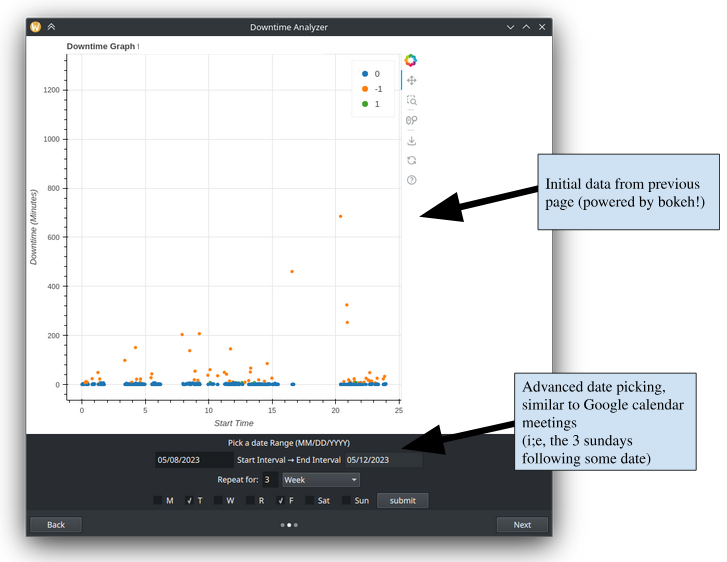
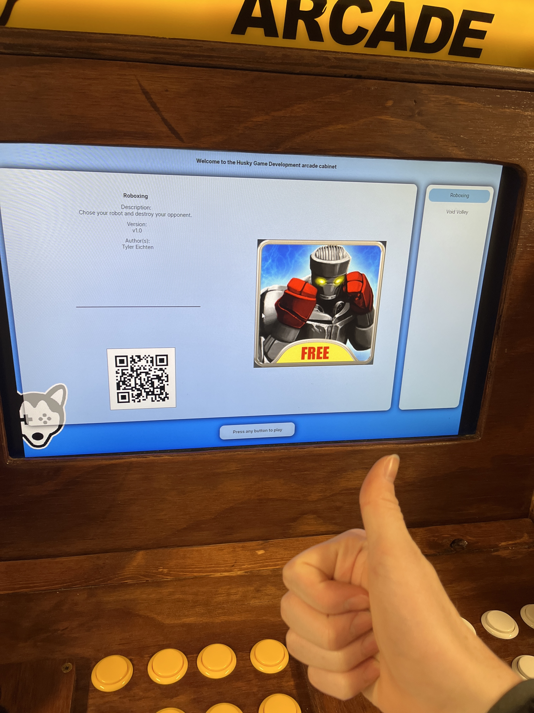
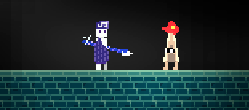

Project 1: ITOxygen AI weld analysis team
ITOxygen is an enterprise at Michigan Tech, where students generally work in teams to develop professional projects
in a more real world environment. This project was company sponsored, though they wish to be unnamed.
I was personally tasked with developing the frontend for the software, which I ended up using Qt for since it provides
bindings for use in Python projects. More specifically, I used Qt's QML, a markup language with a builtin javascript engine
to create modern and dynamic interfaces. Teammates built the bokeh generated graph while I handled integrating it with the
rest of the ui using an embedded webview. The goal was to allow users to analyze downtime in welding machines using a
variety of date ranges to pick out patterns and view specific data like "every sunday for these 3 weeks".


Project 2: Husky Game Development Cabinet Launcher
This is an older project that I did in January 2023, Husky Games is an enterprise at michigan tech
that makes games. They also have an arcade cabinet that a select few of their past games are
available on to play outside their lab room. Unfortunately, the game launcher ui for the cabinet
was very buggy (constantly softlock and require hard restarts) and the source code was seemingly lost.
So I took it upon myself to rewrite the UI from scratch. It was done using C# and the Avalonia UI toolkit,
which is markup based. I also wrote a spec for game metadata so games could provide a small json file to
include a list of authors, an example image for the game, and a few other details that are
displayed on the launcher.

Project 3: Iridos
This is a game I worked on at the Husky game Development Enterprise at Michigan Tech for 3 semesters.
It's a 2D platformer that I was the lead programmer for, and wrote the fast majority of the game's systems, both high level
systems like the player movement and low level components for other developers, like the dialogue system, the puzzle system, most of the user interface, etc.
It's written in godot 3 and the itch.io page linked below includes a web player to try it out in.
The embed failed to load, sorry about that!
